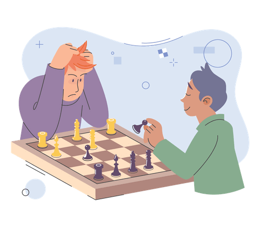

Chess
Became quite interested in chess during my school days and have participated in district-level competitions for two years.
During my 7th standard, I simply participated in the chess tournament which was conducted with in the school. With the four move check mate which my friend taught me, minutes before the tournament, I won 3 matches easily. Only one opponent broke the four step checkmate. So i had to use my basic chess knowledge to play further. Since he was not a big player i was able to win the game after a little struggle. I was not actually a good player, but this four step checkmate helped me get into the school chess team.
But when I get to play with the other students who got selected in the team, I understood where i stand. I was put as reserve out of the 5 members who selected. I went with the team for the district level competetion, but was not able to play a single game. I remained as the reserve player, who can see the district level game from a distance and can also get the sponsered food as other players. Also got to see some cool players who can really blow our mind.
During my 7th standard, I simply participated in the chess tournament which was conducted with in the school. With the four move check mate which my friend taught me, minutes before the tournament, I won 3 matches easily. Only one opponent broke the four step checkmate. So i had to use my basic chess knowledge to play further. Since he was not a big player i was able to win the game after a little struggle. I was not actually a good player, but this four step checkmate helped me get into the school chess team.
But when I get to play with the other students who got selected in the team, I understood where i stand. I was put as reserve out of the 5 members who selected. I went with the team for the district level competetion, but was not able to play a single game. I remained as the reserve player, who can see the district level game from a distance and can also get the sponsered food as other players. Also got to see some cool players who can really blow our mind.


Next year
We had the same team. I was still labelled as a reserve player. But I was learning alot from the practise that was given their and also by witnessing others moves. About 1 week before the District level competition, while the junior team was playing with the senior team, I was playing againist one of the best players in the senior team. For my wonder, I won. Everyone was surprised and was making fun of him. He called a rematch, and again I won. Everyone was shocked and our physical education teacher was surprised. I played again with another senior and played a good game for a draw. Like that i got promoted as the main player.
On the District level competition i got to play as a main player and played a total of 5 games. 2 games won, 2 games lost and 1 game got to be a draw. Which was not great, but is also not that bad as my other team mates also have similar scores. My school didn't won any position there. Still it was a nice experience.